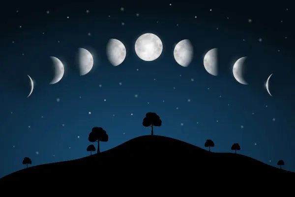
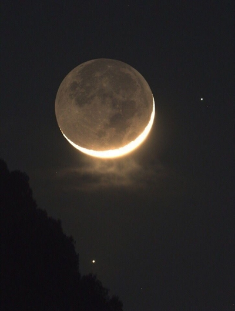
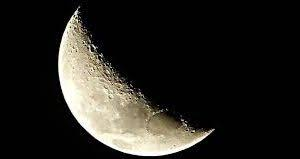
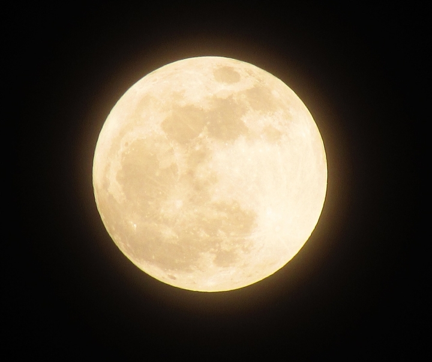

As fases da lua são as diferentes formas que a lua parece ter ao longo de um ciclo lunar. A lua não emite sua própria luz, mas reflete a luz do sol. À medida que a lua orbita a Terra, diferentes partes da sua superfície iluminada pelo sol ficam visíveis para nós na Terra, criando as fases lunares.
LUA NOVA
A lua nova ocorre quando a lua está posicionada entre a Terra e o sol. Nessa fase, a face iluminada da lua está voltada para longe da Terra, então não conseguimos ver a lua no céu.
LUA CRESCENTE
A Lua crescente é uma das fases da Lua em seu ciclo mensal. Durante essa fase, a Lua está se movendo em direção à fase de Lua cheia. A Lua crescente é visível como uma fina lâmina iluminada no céu, que aumenta em tamanho a cada dia até atingir a fase de Lua cheia.
LUA CHEIA
A Lua cheia é uma fase da Lua em seu ciclo mensal, na qual a Lua aparece completamente iluminada no céu noturno. Durante essa fase, a Lua está diretamente oposta ao Sol em relação à Terra, com uma face visível totalmente iluminada pelo Sol.
LUA MINGUANTE
A Lua minguante é uma das fases da Lua em seu ciclo mensal. Durante essa fase, a quantidade de luz visível da Lua começa a diminuir gradualmente. A Lua minguante ocorre após a fase de Lua cheia, quando a Lua está se afastando da fase de plenitude.